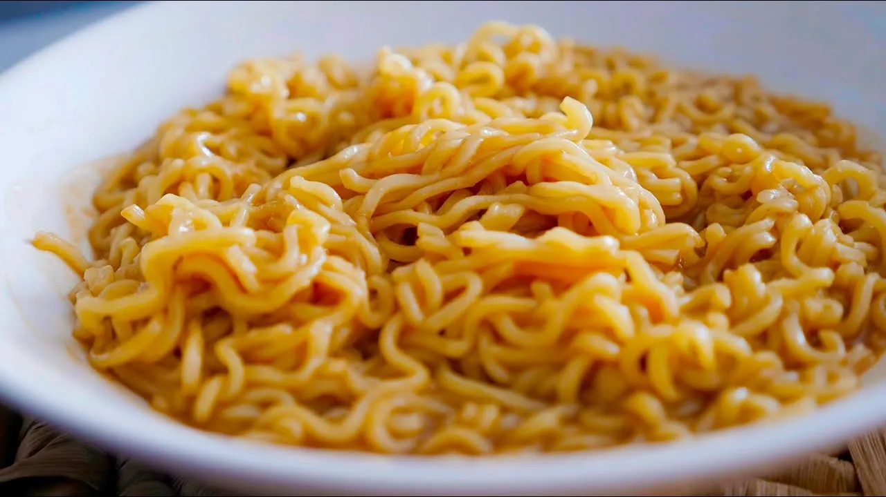

| QUANTIDADE | INGREDIENTES |
| 1 | Pacote de Miojo de sua preferência |
| 1 Sache inteiro | Sache de Sazón |
|
Depois de seguir todos os passos, é so degustar desse maravilhoso miojo.
Assim que irá ficar o miojo:
Tambem temos um video, caso fique mais facíl para vocêVideo de como fazer o miojo